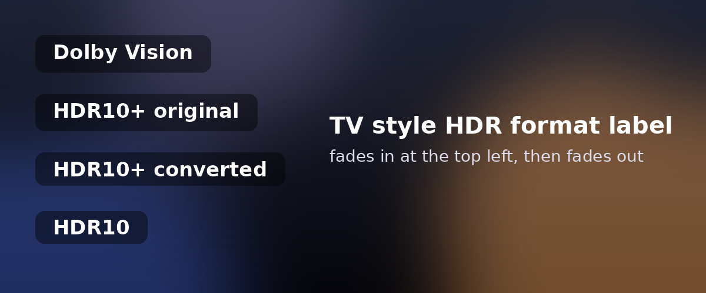

Why DV Player
UHD Blu-ray remuxes use Dolby Vision profile 7. Almost every Android phone and tablet with Dolby Vision only supports profile 8.1, so these files fail with a codec error or play as plain HDR10. DV Player fixes this on the device, in real time, also when streaming.
Profile 7 → 8.1 on the fly
The enhancement layer is dropped and every Dolby Vision RPU is rewritten as profile 8.1, like dovi_tool does – during playback, with negligible CPU usage. MEL is lossless.
4K Dolby Vision that actually engages
Many devices under-report their Dolby Vision decoder (e.g. “FHD 30”) and recent players fall back to HDR10 for 4K. DV Player keeps the Dolby Vision decoder.
Dolby Vision → HDR10+ (experimental)
On devices without Dolby Vision but with HDR10+ (Samsung, Google Pixel), Dolby Vision metadata becomes HDR10+ dynamic metadata, scene by scene. Hybrid files keep their original HDR10+.
TV style HDR label
When a video starts, a translucent label shows what is really playing: Dolby Vision, HDR10+ original, HDR10+ converted, HDR10 or HLG.
Works with your media server
Use it as the external player of Emby, Jellyfin, Plex or Stremio (Direct Play), or open local MKV/MP4 files.
Built-in diagnostics
Pause a Dolby Vision video to see the decoder in use, the real playback mode and the conversion counters.

Install
- On your Android device open the latest release and download
DVPlayer-….apk. - Open the file and allow installing apps from your browser if Android asks.
- In Emby, Jellyfin, Plex or Stremio choose an external player, enable Direct Play, and pick DV Player when a movie starts.
Settings: start a video, tap the screen and long press the ⚙️ gear icon. DV Player installs next to Just Player and updates install over the previous version.
FAQ
Is FEL supported? FEL is converted to profile 8.1 too: the picture is the Dolby Vision base layer with its dynamic metadata, without the enhancement layer (as with dovi_tool mode 2). True dual layer FEL needs dedicated hardware that phones and tablets don't have.
Which files? Single-track Dolby Vision profile 7 (as in MakeMKV remuxes) and profile 8.1 in MKV, MP4 or TS files and progressive streams. HLS/DASH and encrypted content are not converted.
Tested on: Lenovo Tab P12 Pro (Dolby Vision) and Google Pixel 8 Pro (HDR10+). Tried it on another device? Tell us how it went.
Support the project
DV Player is free and ad-free. If it is useful to you, a donation of any amount helps.
❤️ Donate with PayPal🇮🇹 In italiano
DV Player è un lettore video gratuito e open source per Android che riproduce i remux dei Blu-ray UHD in vero Dolby Vision su telefoni e tablet: il Dolby Vision profilo 7 (MEL/FEL), che quasi nessun dispositivo Android supporta, viene convertito nel profilo 8.1 durante la riproduzione, anche in streaming.
- Profilo 7 → 8.1 in tempo reale: scarta lo strato di miglioramento e riscrive i metadati Dolby Vision, come dovi_tool. Il MEL è senza perdite.
- Dolby Vision 4K sbloccato sui dispositivi che dichiarano capacità inferiori a quelle reali.
- Dolby Vision → HDR10+ (sperimentale) per i dispositivi senza Dolby Vision, come Samsung e Google Pixel. I file ibridi mantengono il loro HDR10+ originale.
- Etichetta in stile TV all'avvio del video: Dolby Vision, HDR10+ original, HDR10+ converted, HDR10 o HLG.
- Lettore esterno per Emby, Jellyfin, Plex e Stremio (Direct Play).
Installazione: dal dispositivo Android apri l'ultima versione, scarica il file DVPlayer-….apk e aprilo. Le impostazioni si aprono tenendo premuta l'icona dell'ingranaggio ⚙️ durante un video.
Se DV Player ti è utile puoi sostenerlo con una donazione su PayPal. Hai provato DV Player sul tuo dispositivo? Facci sapere com'è andata.